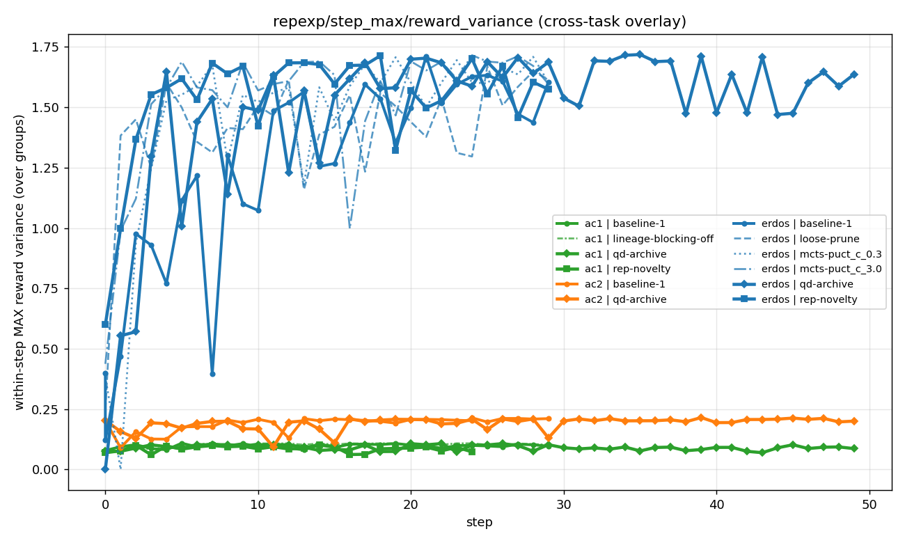
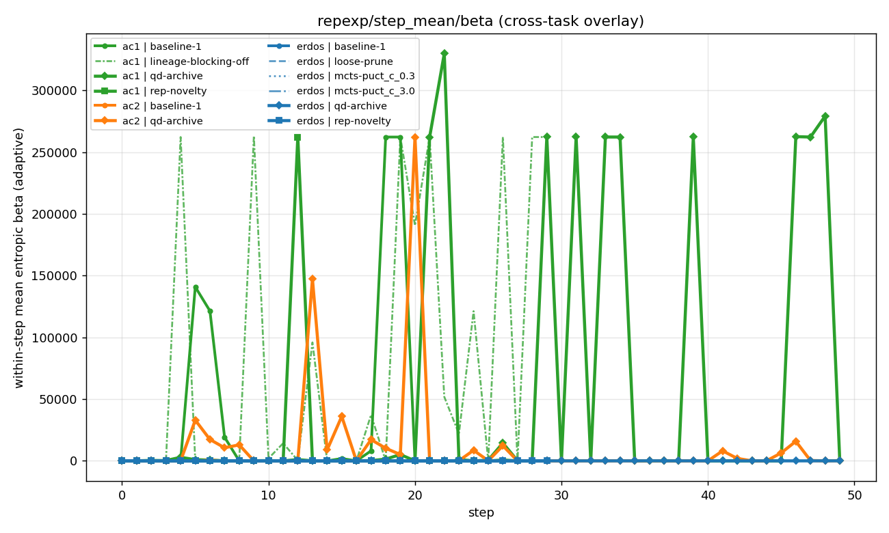
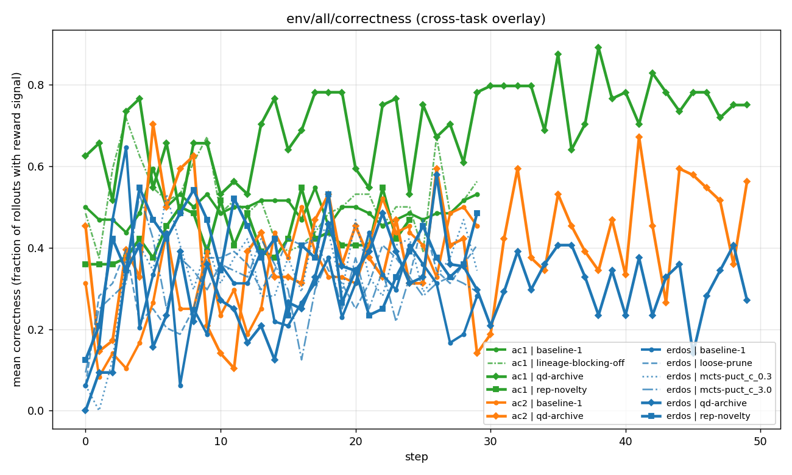
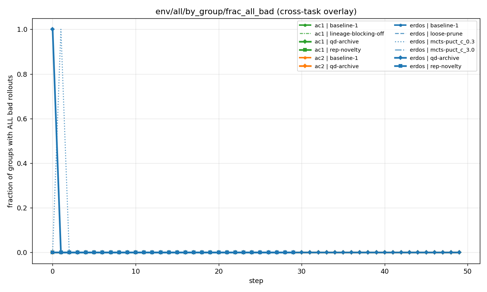

D1·D2 EXPERIMENT
D1 + D2 — Learning signal stays meaningful
Two checks that the commitment problem isn't because the gradient died — it's not.
D1 — Within-group reward variance
Stays meaningful throughout training on every task. Even after monomorphism, the within-group rollouts have a range of rewards → the policy gradient is non-trivial.


D2 — Entropic ESS
The entropic-adaptive-β advantage estimator computes an effective sample size per group. It stays above 1 throughout training → not a single-rollout-dominates collapse.


Bonus: env-level signal


What it means
Rules out "the policy ran out of gradient" as a cause of H1 commitment. Gradient signal stays meaningful; ESS stays > 1; correctness stays above floor. The selection bias that drives monomorphism is independent of "is there anything to learn from?".